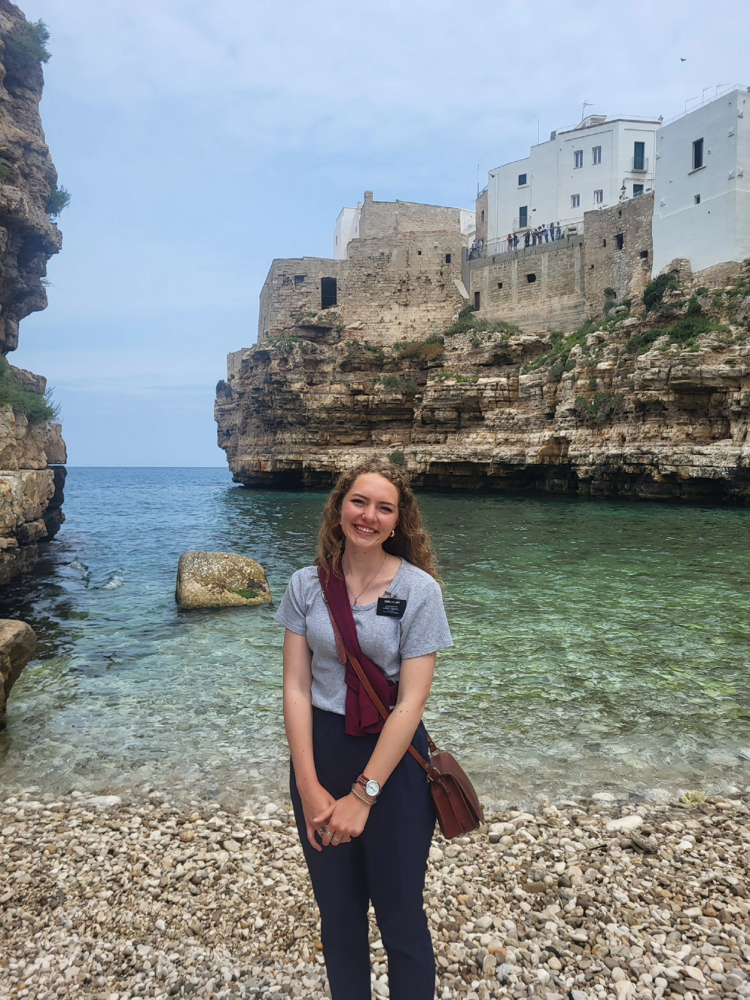

My time in Italy

Things to do
- There are many boat tours that showcase the beautiful landscape.
- There are many historical sites to see in Italy.
- In Rome there is the Colosseum.
- In Milan there is the Duomo.
- The art in Italy is showcased in buildings, churches, and museums.
Top of Page